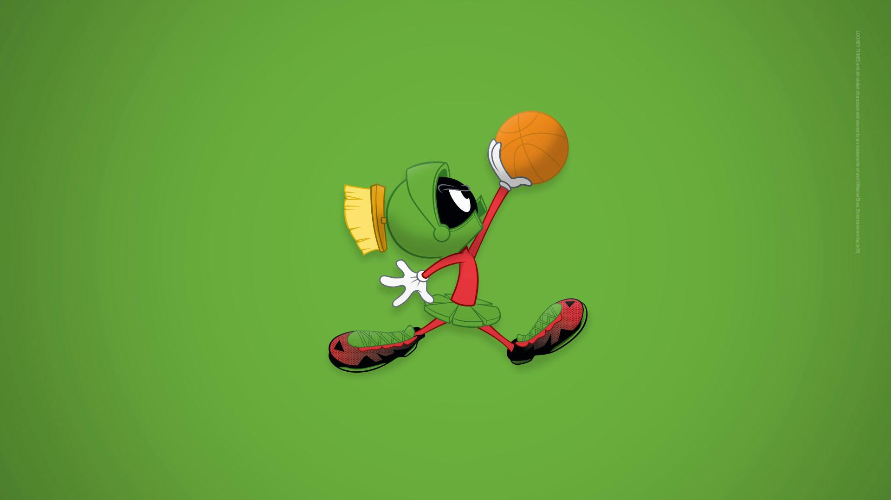

About Marvin
He regularly attempts to destroy Earth, often for petty reasons such as wanting a better view of Venus. Despite his destructive tendency, he is still a comedic character. He sometimes rather shows an interest in studying Earth (or kidnapping its various inhabitants) rather than destroying it. Marvin is the quietest, calmest and politest of the Looney Tunes villains, and the most soft-spoken, and unlike most of the other villains, he is very clever.
Ralph's characteristics
He's quiet, calm, polite and soft-spoken.
This is Ralph in action